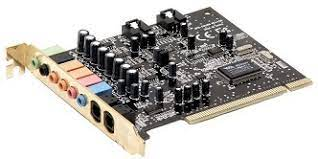

Sound Cards
Sound cards, also known as audio cards, are expansion cards that provide dedicated hardware for processing and outputting audio signals in a computer system. They offer enhanced audio capabilities beyond the basic sound functionality integrated into modern motherboards, catering to the needs of audiophiles, gamers, and multimedia enthusiasts.
What is a Sound Card?
A sound card is a computer component that is designed to handle the input, processing, and output of digital audio signals. It acts as an interface between the computer's internal components and external audio devices, such as speakers, headphones, microphones, and recording equipment.

Key Components of a Sound Card
A typical sound card consists of several essential components, including:
- Analog-to-Digital Converter (ADC): The ADC converts analog audio signals from input devices, such as microphones, into digital data that can be processed by the computer.
- Digital-to-Analog Converter (DAC): The DAC converts digital audio data into analog signals that can be played through speakers or headphones.
- Audio Codec: The audio codec is a specialized integrated circuit that handles audio encoding and decoding, enabling various audio formats and processing capabilities.
- Audio Processors: Sound cards may include dedicated audio processors for advanced audio effects, equalizers, and signal processing, enhancing the overall audio quality and experience.
- Connectors: Sound cards typically provide various connectors, such as line-in, line-out, microphone, and speaker jacks, to connect different audio devices.
Sound Card Features
Sound cards offer a range of features that enhance the audio experience, including:
- High-Resolution Audio: Sound cards support high-resolution audio formats like 24-bit/192kHz, providing better dynamic range and clarity compared to basic onboard audio solutions.
- Surround Sound: Many sound cards support multi-channel surround sound configurations, such as 7.1 or 5.1 surround, for an immersive audio experience.
- Advanced Audio Processing: Sound cards often include advanced audio processing capabilities, such as environmental audio extensions (EAX), hardware acceleration for 3D audio, and real-time effects like reverb, echo, and equalization.
- Low Latency: Sound cards are designed to minimize latency, which is the delay between audio input and output, making them suitable for real-time audio applications like music production and gaming.
Importance of Sound Cards
While modern motherboards typically include integrated audio solutions, standalone sound cards offer several advantages for users who demand superior audio quality and advanced audio features. They are particularly beneficial for applications such as music production, gaming, home theater setups, and professional audio editing.
Choosing the right sound card depends on factors like the intended use case, the number of audio channels required, the desired audio quality, and compatibility with other components in the system. Proper installation and configuration of the sound card and its drivers are crucial for optimal audio performance.